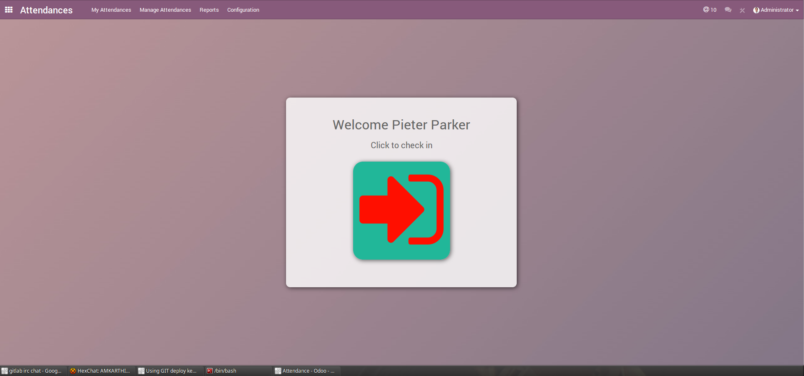
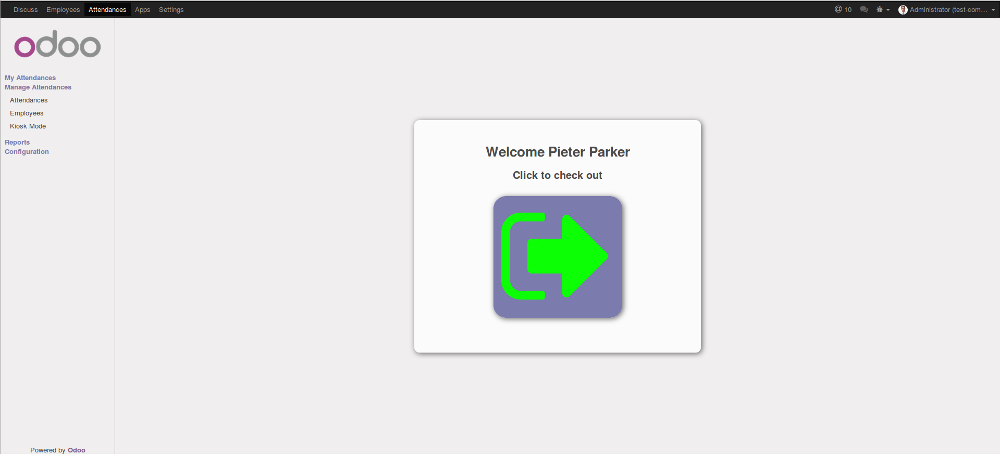

<section class="oe_container">
    <div class="oe_row oe_spaced">
        <h2 class="oe_slogan" style="color:#875A7B;">Sign In/Out Color</h2>
        <h3 class="oe_slogan">
                    This module is used to change the colors of Sign in and Sign out buttons in Attendance.
        </h3>
        <h3 class="oe_slogan" style="color:#875A7B; text-align: left;">Lets see the screenshots for the overview of the module functionality.</h3>
        <div class="oe_mt32 oe_mb32 text-justify">1. The below image indicates that the user was signed out.</div>
        <div class="oe_mb32 oe_demo oe_picture oe_screenshot">
            
        </div>
        <div class="oe_mt32 oe_mb32 text-justify">2. The below image indicates that the user is signed in.</div>
        <div class="oe_demo oe_picture oe_screenshot">
            
        </div>
</section>

<section class="oe_container">
    <div class="oe_row oe_spaced">
        <div class="oe_span12">
            <h2>Need our service?</h2>
            <p class="oe_mt32">Contact us by <a href="mailto:dev@sodexis.com">email</a> or fill out <a href="https://www.sodexis.com/contact-odoo-openerp-erp-partner.html" target="_blank">request form</a></p>
            <ul>
                <li><a href="mailto:dev@sodexis.com"><i class="fa fa-envelope-o"></i> Sodexis, Inc <dev@sodexis.com></a></li>
                <li><a href="https://www.sodexis.com/contact-odoo-openerp-erp-partner.html" target="_blank"><i class="fa fa-list-alt"></i> https://www.sodexis.com</a></li>
            </ul>
        </div>
    </div>
</section>
<section class="oe_container oe_separator">
</section>
